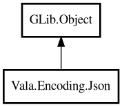

Json
Object Hierarchy:

Description:
public class Json : Object
Static utility methods for JSON parsing, serialization, and querying.
JSON is handled as a value tree rooted in JsonValue. The typical workflow is `parse` -> `query` -> `asString` to reach data in
three steps.
Example:
var root = Json.parse ("{\"user\": {\"name\": \"Alice\"}}");
var name = Json.getString (root, "$.user.name", "unknown");
assert (name == "Alice");
Content:
Static methods:
- public static JsonValue? @set (JsonValue root, string path, JsonValue value)
Sets a value at the given path, returning a new tree.
- public static HashMap<string,JsonValue>? flatten (JsonValue root)
Flattens a nested JSON object into dot-notation keys.
- public static bool getBool (JsonValue root, string path, bool fallback)
Returns a boolean value at the given path with a fallback.
- public static int getInt (JsonValue root, string path, int fallback)
Returns an integer value at the given path with a fallback.
- public static string getString (JsonValue root, string path, string fallback)
Returns a string value at the given path with a fallback.
- public static JsonValue? merge (JsonValue a, JsonValue b)
Merges two JSON objects, with the second taking precedence.
- public static JsonValue? parse (string json)
Parses a JSON string into a JsonValue tree.
- public static JsonValue? parseFile (Path path)
Parses a JSON file into a JsonValue tree.
- public static string pretty (JsonValue value, int indent = 2)
Serializes a JsonValue tree to an indented JSON string.
- public static JsonValue? query (JsonValue root, string path)
Queries a value by JSON path expression.
- public static JsonValue? remove (JsonValue root, string path)
Removes a key at the given path, returning a new tree.
- public static string stringify (JsonValue value)
Serializes a JsonValue tree to a compact JSON string.
Creation methods:
Inherited Members:
All known members inherited from class GLib.Object
- @get
- @new
- @ref
- @set
- add_toggle_ref
- add_weak_pointer
- bind_property
- connect
- constructed
- disconnect
- dispose
- dup_data
- dup_qdata
- force_floating
- freeze_notify
- get_class
- get_data
- get_property
- get_qdata
- get_type
- getv
- interface_find_property
- interface_install_property
- interface_list_properties
- is_floating
- new_valist
- new_with_properties
- newv
- notify
- notify_property
- ref_count
- ref_sink
- remove_toggle_ref
- remove_weak_pointer
- replace_data
- replace_qdata
- set_data
- set_data_full
- set_property
- set_qdata
- set_qdata_full
- set_valist
- setv
- steal_data
- steal_qdata
- thaw_notify
- unref
- watch_closure
- weak_ref
- weak_unref